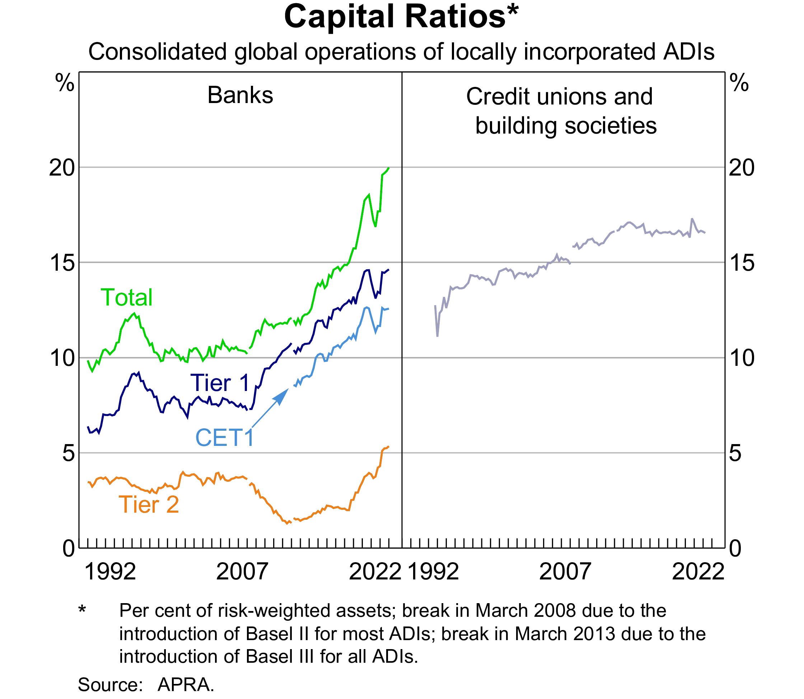
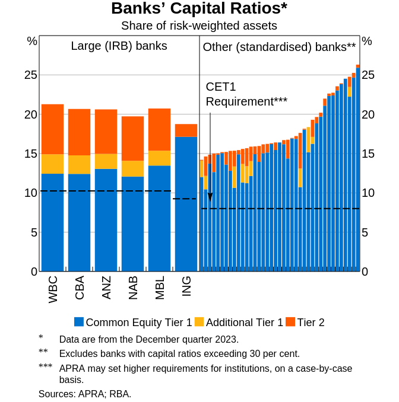

viewof cash = Inputs.range(
[0, 100],
{value: 20, step: 1, label:"Cash:"}
)
viewof capital = Inputs.range(
[0, 100],
{value: 40, step: 1, label:"Initial capital:"}
)
d = {
const c = 0.05, m = 10;
const loan = 100;
const y = 0.05;
function pv(c, f, t, r) {
return c * (1 - (1+r)**(-t)) / r + f / (1+r)**(t)
}
const prices = {"YTM": [], "Equity": []};
let coupon = loan * c;
let deposits = 120 - capital;
for (let ytm = 0.01; ytm < 20; ytm++) {
let mvloan = pv(coupon, loan, m, ytm/100);
let dy = ytm - y*100;
prices["YTM"].push(dy);
prices["Equity"].push(cash + mvloan - deposits);
}
return prices;
}
Plot.plot({
caption: "Assume current YTM of 5%.",
x: {padding: 0.4, label: "Change in YTM (%)"},
grid: true,
marks: [
Plot.ruleY([0]),
Plot.ruleX([0]),
Plot.lineY(transpose(d), {x: "YTM", y: "Equity", stroke: "blue"}),
]
})AFIN8003 Week 3 - Capital Management and Adequacy
Banking and Financial Intermediation
AFIN8003
2025S1
Introduction
Defining “capital”
Understanding how capital safeguards a financial institution (FI) from insolvency risk requires a clear definition of capital. However, definitions vary significantly across different perspectives:
- Economist’s Perspective: Economists define an FI’s capital, or owners’ equity, as the difference between the market values of its assets and liabilities, also known as net worth. This concept aligns with market value accounting.
- Accounting Perspective: Accountants typically focus on book value, which is the historical cost of assets minus liabilities as recorded in financial statements.
- Regulatory Perspective: Regulatory bodies have crafted definitions of capital that may diverge from economic net worth to prioritize financial stability. Regulatory capital requirements often rely on historical or book value accounting concepts.
- Regulatory capital includes various tiers (e.g., Tier 1 and Tier 2) and is used to assess capital adequacy.
Capital of financial institutions (FIs)
The major functions of capital are
- to absorb unanticipated losses to enable the FI to continue as a going-concern
- to protect uninsured depositors, bondholders and creditors in case of insolvency and liquidation
- to protect FI insurance funds and the taxpayer
- to protect the FI owners against increases in insurance premiums
- to partially fund the FI’s real investment activities
Why is capital important in a regulatory context? APRA’s explanation of capital
From a prudential regulator’s perspective, capital is a measure of the financial cushion available to an institution to absorb any unexpected losses it experiences in running its business. For a bank, such losses might include loans that default and are written off. Insurers might be hit by an unexpectedly high volume of claims in the wake of a major natural disaster.
Sufficient capital levels
- inspire confidence in the FI
- enable the FI to continue as a going concern even in difficult times
Capital and insolvency risk
Example of bank net worth (capital) absorbing losses
The marking-to-market method allows balance sheet values to reflect current rather than historic prices.
Consider the following market value balance sheet of an FI:
| Assets ($m) | Amount | Liabilities ($m) | Amount |
|---|---|---|---|
| Securities | 70 | Deposits | 85 |
| Loans | 30 | Net worth | 15 |
| Total assets | 100 | Total liabilities + equity | 100 |
In this example the FI is solvent on a market value basis.
Example of bank net worth (capital) absorbing losses
The marking-to-market method allows balance sheet values to reflect current rather than historic prices.
Consider a fall in the market value of loans to $10 (a fall of $20m).
| Assets ($m) | Amount | Liabilities ($m) | Amount |
|---|---|---|---|
| Securities | 70 | Deposits | 85 |
| Loans | 10 | Net worth | -5 |
| Total assets | 80 | Total liabilities + equity | 80 |
FI is now insolvent, its net worth has declined from $15 to -$5. The owners’ net worth stake has been completely wiped out.
After the liquidation of the remaining $80 in assets, depositors would get only 80/85 in dollars, without deposit insurance.
The FI’s capital is used to absorb (partially) the losses.
The example also shows that market valuation of the balance sheet produces an economically accurate picture of the net worth and thus the solvency position of an FI.
The book value of capital
However, the FI’s balance sheet based on book value could remain unchanged.
| Assets ($m) | Amount | Liabilities ($m) | Amount |
|---|---|---|---|
| Securities | 70 | Deposits | 85 |
| Loans | 30 | Net worth | 15 |
| Total assets | 100 | Total liabilities + equity | 100 |
Note that Table 3 looks identical to Table 1.
With book value accounting, FIs have discretion in how and when they report loan losses on their balance sheets.
This flexibility allows them to strategically manage the recognition of these losses and their subsequent effect on capital.
For example, the FI could just record an increase in loan loss provisions to reflect their expected loan losses (e.g., $5m).
| Assets ($m) | Amount | Liabilities ($m) | Amount |
|---|---|---|---|
| Securities | 70 | Deposits | 85 |
| Loans | 30 | Net worth | 10 |
| less loan loss provisions | (5) | ||
| Total assets | 95 | Total liabilities + equity | 95 |
Market-value vs book-value of equity
Obviously, market-value-based view of capital allows for a more accurate and comprehensive description of FIs’ financial health.
If regulators close a FI before it’s market value of capital reaches zero, liability holders will not lose.
But not all assets and liabilities are valued as fair value (market value).
Note
- The Financial Accounting Standards Board (FASB) sets out Financial Accounting Standards (FAS) and the Generally Accepted Accounting Principles (GAAP), adopted in the U.S.
- The International Accounting Standards Board (IASB) sets out the International Financial Reporting Standards (IFRS), adopted in many other places.
All trading assets, marketable securities (“available for sale”) are marked to market.
Loans and debt securities held for investment or to maturity are carried at amortized cost (book value).
Tip
Recall a bank’s banking book and trading book.
Why not market value for all?
- Difficult to implement, especially for small banks, building societies and credit unions with large amounts of non-traded assets
- Introduces unnecessary variability into an FI’s earnings
- FIs are less willing to take long-term asset exposures such as commercial mortgages and business loans, since long-term assets are more interest rate sensitive.
| Assets ($m) | Amount | Liabilities ($m) | Amount |
|---|---|---|---|
| Cash | 20 | Deposits | 80 |
| 10-yr 5% corporate loans | 100 | Net worth | 40 |
| Total assets | 120 | Total liabilities + equity | 120 |
Change in market conditions (like yield) can cause significant variation in bank’s capital value.
As a result, market value accounting may interfere with FIs’ special functions as lenders and monitors and may even result in (or accentuate) a major credit crunch.
Capital management and regulation
In summary,
- capital is useful to absorb losses and to mitigate insolvency risk;
- regulators use book value accounting standards to determine the adequate capital requirements for FIs.
As a result, FI’s capital is guided by two key factors:
- regulated capital adequacy requirements, and
- the risk-return trade-offs.
Risk-based capital ratio
Who determines the capital requirements?
Actual capital ratios applied can be country-specific, determined by national regulators. However, the Basel Accords provide the global framework for these capital ratios.
- The Basel Committee on Banking Supervision (BCBS) of the BIS sets out the 1988 Basel Capital Accord.
- Member countries of the BIS agreed and implemented the Basel Capital Accord (Basel I).
- a minimum ratio of capital to risk-weighted assets of 8%.
- A series of updates led to the Basel Accord of 2006 (Basel II)
- Basel III: responding to the 2007-09 financial crisis.
Basel I
Two capital ratios:
- Tier 1 Capital Ratio
- Primarily composed of common equity, retained earnings, and disclosed reserves, less goodwill and other intangibles.
- Calculation: Tier 1 Capital / Risk-Weighted Assets (RWA)
- Minimum requirement: 4%
- Total Capital Ratio
- Minimum requirement: 8%
Features:
- Basel I introduced the systematic measurement of capital adequacy through the use of risk-weighted assets.
- Basel I utilized RWA to account for the varying risk levels of different asset classes, including both on-balance-sheet and off-balance-sheet exposures.
Criticisms:
- Credit Risk Focus: Basel I primarily recognized credit risk in the calculation of risk-weighted assets. It did not initially incorporate market risk or operational risk, leading to criticisms that it did not fully address the spectrum of risks faced by banks.1
Basel II
Basel II comprised three pillars:
- minimum capital requirements, which sought to develop and expand the standardised rules set out in the 1988 Accord
- supervisory review of an institution’s capital adequacy and internal assessment process
- effective use of disclosure as a lever to strengthen market discipline and encourage sound banking practices
- The measurement of capital did not change markedly in Basel II.
- The measurement of risk was significantly enhanced to include operational risk, some market risks in the banking book, and risks associated with securitisation.
Under Basel II, two options are allowed for banks to measure their credit risk:
- Standardized approach. Similar to Basel I, but more risk-sensitive.
- Internal ratings-based (IRB) approach. Banks can use their internal rating system or credit scoring models to assess their portfolios, subject to regulatory approval.
Three options are available for measuring operational risk:
- basic indicator.
- standardized approach.
- advanced measurement approach.
GFC and Basel 2.5
The Global Financial Crisis (GFC) in 2007-09 revealed that Basel II was flawed. For example,
- credit ratings of complex securities were conducted by private companies without regulatory supervision or review
- Basel II capital adequacy formula was procyclical, meaning that the required capital was increasing as the crisis unfolded, making it even harder for banks during crisis
In response, Basel 2.5 was passed in 2009 (effective in 2013) and Basel III was passed in 2010 (phased in between 2013 and 2019).2
- Basel 2.5 updated capital requirements on market risk from banks’ trading activities.
Basel III
Basel III is broader in perspective than just a revision of capital, capital adequacy, risk measurement and supervision. It introduced macroprudential measures, targeting the protection of the whole financial system.
Three pillars similar to in Basel II, but with significant enhancements.
- Improvements to both standardized and IRB approaches in calculating adequate capital.
- Inclusion of new capital conversion buffer and countercyclical capital buffer to the minimum required capital level.
- Introduction of two minimum standards for funding liquidity: liquidity coverage ratio and net stable funding ratio.3
- Higher capital requirements for trading and derivative activities.
- Enhanced bank governance.
- Enhanced risk disclosure.
Note
Basel III is our focus, of course.
Risk-based capital ratio
Under Basel III, depositary institutions (DIs) calculate and monitor four capital ratios:
Common equity Tier 1 (CET1) risk-based capital ratio \[ \text{CET1 capital ratio} = \frac{\text{CET1 capital}}{\text{Risk-weighted assets}} \tag{1}\]
Tier 1 risk-based capital ratio \[ \text{Tier 1 capital ratio} = \frac{\text{Tier 1 capital}}{\text{Risk-weighted assets}} \tag{2}\]
Total risk-based capital ratio \[ \text{Total capital ratio} = \frac{\text{Total capital}}{\text{Risk-weighted assets}} \tag{3}\]
Tier 1 leverage ratio \[ \text{Tier 1 leverage ratio} = \frac{\text{Tier 1 capital}}{\text{Total exposure}} \tag{4}\]
- The calculation of these capital ratios is complex.
- Use risk-weighted assets (RWA) to distinguish the different credit risks of different assets.
- Measure a DI’s credit risk (on-and off-balance-sheet).
Important
- Additional capital charges for market risk and operational risk.
- For now, we do not consider these risks and their impact on RWA.
- We briefly explain how they affect RWA and capital ratios at the end of this lecture.
Standardized and IRB approaches for credit risk
Since Basel II, two options are available for banks to measure credit risk for calculating capital requirements.
- The standardized approach.
- Used by smaller depositary institutions.
- The internal ratings-based (IRB) approach.
- Used by large depositary institutions.
- US: about 20 of the largest banking institutions with consolidated assets of $250 billion or more.4
- Australia: currently approved for use by 6 of the largest banks in Australia.
- Used by large depositary institutions.
Capital ratios of DIs in Australia


Type of capital: CET1 Capital
CET1 is the primary or core capital of a DI.
- Common shares
- Share premium resulting from the issue of CET1 instruments
- Retained earnings
- Accumulated and other comprehensive income
- Other disclosed reserves
- Certain minority interests
- Regulatory adjustment applied in the calculation of CET1 Capital.
Type of capital: Tier 1 Capital
Tier 1 Capital is the sum of CET1 Capital and Additional Tier 1 Capital.
Additional Tier 1 Capital:
- Instruments issued by a DI that qualify for Additional Tier 1 Capital and are not included in CET1 capital.5
- Share premium resulting from the issue of instruments included in Additional Tier 1 Capital.6
- Tier 1 minority interest not included CET1 capital.
- Regulatory adjustments applied in the calculation of Additional Tier I Capital.
Type of capital: Total Capital
Total Capital is the sum of Tier 1 and Tier 2 capitals, where Tier 2 Capital is supplementary capital.
Tier 2 Capital:
- Instruments issued by a DI that qualify for Tier 2 Capital and are not included in Tier 1 capital.7
- Share premium resulting from the issue of instruments included in Tier 2 Capital.8
- Tier 2 minority interest not included Tier 1 capital.
- Certain loan loss provisions.
- Regulatory adjustments applied in the calculation of Tier 2 Capital.
Capital adequacy
Capital adequacy framework
- Credit risk
- The risk-based capital ratios as described earlier.
- Interest rate risk
- No formal add on yet.
- Market risk
- Additional capital charge.
- Operational risk
- Additional capital charge.
Minimum required capital adequacy ratios
The minimum required capital ratios: \[ \begin{aligned} \text{CET1 capital ratio} &= \frac{\text{CET1 capital}}{\text{Risk-weighted assets}} \ge 4.5\% \\ \text{Tier 1 capital ratio} &= \frac{\text{Tier 1 capital}}{\text{Risk-weighted assets}} \ge 6\% \\ \text{Total capital ratio} &= \frac{\text{Total capital}}{\text{Risk-weighted assets}} \ge 8\% \\ \text{Tier 1 leverage ratio} &= \frac{\text{Tier 1 capital}}{\text{Total exposure}} \ge 4\% \end{aligned} \tag{5}\]
Overview of capital ratios calculation
- Calculate the amount of capital (CET1, Tier 1, Total Capital).
- Calculate the risk-weighted assets (RWA)9: sum of the amount of each asset multiplied by a risk weight specific to its riskiness.
- On-balance-sheet:
- Each asset has a risk weight
- Multiply the asset by the corresponding risk weight
- Off-balance-sheet:
- Convert each asset to an on-balance-sheet equivalent
- Multiply the equivalent exposure by the corresponding risk weight
- Sum the on-balance-sheet and off-balance-sheet RWA
- On-balance-sheet:
- Calculate the capital ratios based on the amount of capital and RWA.
Capital ratios calculation: risk-weighted assets
We will use an example to showcase how to calculate risk-weighted assets.
| Asset type | $ million |
|---|---|
| Cash, Australian Treasury Bonds and deposits at the RBA | 20 |
| Local government bonds, S&P rating of AA- | 10 |
| Loans to other Australian banks, S&P rating of BBB+ | 5 |
| Standard eligible residential mortgages | 40 |
| Corporate loans, S&P rating of BB- to BBB+ | 25 |
| Corporate loans, S&P rating of B+ or lower | 20 |
| OBS item | $ million |
|---|---|
| Contingencies and guarantees | |
| Two-year loan commitment | 80 |
| Standby letter of credit | 10 |
| Commercial letter of credit | 50 |
| Market contracts and derivatives | |
| Four-year fixed–floating interest rate swap | 100 |
| Two-year forward foreign exchange contract | 40 |
Risk-weighted assets: on-balance-sheet
Consider the following example balance sheet of a DI.
We want to calculate its on-balance-sheet RWA.
| Asset type | $ million |
|---|---|
| Cash, Australian Treasury Bonds and deposits at the RBA | 20 |
| Local government bonds, S&P rating of AA- | 10 |
| Loans to other Australian banks, S&P rating of BBB+ | 5 |
| Standard eligible residential mortgages | 40 |
| Corporate loans, S&P rating of BB- to BBB+ | 25 |
| Corporate loans, S&P rating of B+ or lower | 20 |
Risk-weighted assets: on-balance-sheet
Now map the assets’ risk weights.10
| Asset type | $ million | Risk weight |
|---|---|---|
| Cash, Australian Treasury Bonds and deposits at the RBA | 20 | 0% |
| Local government bonds, S&P rating of AA- | 10 | 20% |
| Loans to other Australian banks, S&P rating of BBB+ | 5 | 100% |
| Standard eligible residential mortgages | 40 | 35% |
| Corporate loans, S&P rating of BB- to BBB+ | 25 | 100% |
| Corporate loans, S&P rating of B+ or lower | 20 | 150% |
Risk-weighted assets: on-balance-sheet
Calculate the risk-weighted value for each asset.
| Asset type | $ million | Risk weight | Risk-weighted value |
|---|---|---|---|
| Cash, Australian Treasury Bonds and deposits at the RBA | 20 | 0% | 0 |
| Local government bonds, S&P rating of AA- | 10 | 20% | 2 |
| Loans to other Australian banks, S&P rating of BBB+ | 5 | 100% | 5 |
| Standard eligible residential mortgages | 40 | 35% | 14 |
| Corporate loans, S&P rating of BB- to BBB+ | 25 | 100% | 25 |
| Corporate loans, S&P rating of B+ or lower | 20 | 150% | 30 |
Risk-weighted assets: on-balance-sheet
Calculate the total risk-weighted assets.
| Asset type | $ million | Risk weight | Risk-weighted value |
|---|---|---|---|
| Cash, Australian Treasury Bonds and deposits at the RBA | 20 | 0% | 0 |
| Local government bonds, S&P rating of AA- | 10 | 20% | 2 |
| Loans to other Australian banks, S&P rating of BBB+ | 5 | 100% | 5 |
| Standard eligible residential mortgages | 40 | 35% | 14 |
| Corporate loans, S&P rating of BB- to BBB+ | 25 | 100% | 25 |
| Corporate loans, S&P rating of B+ or lower | 20 | 150% | 30 |
| Total RWA | 76 |
Risk-weighted assets: off-balance-sheet (OBS)
Two-Step Process:
- The notional amount of each OBS item is first converted into an on-balance-sheet equivalent, credit equivalent amount (CEA).
- The CEA is determined by multiplying the notional amount by a credit conversion factor (CCF).
- CCF under Basel III.
- In Australia, CCFs are specified in APRA’s APS 112.
- The resulting CEA must be multiplied by the appropriate risk weight (same as those used for on-balance-sheet assets).
Treatments differ for
- OBS guaranty-type contracts and contingent contracts, e.g., letters of credit
- derivative and market contracts, e.g., interest rate forward, option, and swap contracts
Risk-weighted assets: OBS contingent guaranty contracts
Consider the following example off-balance-sheet items of a DI. We want to calculate its RWA.
First, convert to on-balance-sheet CEA.11
| OBS item | Face value ($ million) | CCF | CEA |
|---|---|---|---|
| Two-year loan commitment | 80 | 0.4 | 32 |
| Standby letter of credit | 10 | 1 | 10 |
| Commercial letter of credit | 50 | 0.2 | 10 |
Second, calculate RWA.12
| OBS item | CEA | Risk weight | Risk-weighted value |
|---|---|---|---|
| Two-year loan commitment | 32 | 20% | 6.4 |
| Standby letter of credit | 10 | 20% | 2 |
| Commercial letter of credit | 10 | 75% | 7.5 |
| Total RWA | 15.9 |
Risk-weighted assets: OBS market contracts or derivative instruments
OBS market contracts and derivatives expose the DI also to counterparty risk.
First, when converting to CEA, both potential future exposure and current exposure are considered.
- The potential future exposure reflects the risk if a counterparty defaults in the future.
| Type of Contract (remaining maturity) | Notional Principal | × | Potential Exposure Conversion Factor | = | Potential Exposure |
|---|---|---|---|---|---|
| Four-year fixed–floating interest rate swap | $100 m | × | 0.005 | = | $0.5 m |
| Two-year forward foreign exchange contract | $ 40 m | × | 0.05 | = | $2 m |
- The current exposure reflects the cost of replacing a contract if the counterparty defaults today.
| Type of Contract (remaining maturity) | Replacement Cost | Current Exposure |
|---|---|---|
| Four-year fixed–floating interest rate swap | $3 m | $3m |
| Two-year forward foreign exchange contract | –$1 m | $0m |
CEA = potential future exposure + current exposure
| Type of Contract (remaining maturity) | Potential Exposure | Current Exposure | CEA |
|---|---|---|---|
| Four-year fixed–floating interest rate swap | $0.5 m | $3 m | $3.5 m |
| Two-year forward foreign exchange contract | $2 m | $0 | $2 m |
Second, calculate RWA. Under Basel III, the risk weight for OBS market contracts or derivative instruments is generally 100%.
Total RWA = \(\text{CEA} \times \text{risk weight} = \text{CEA} \times 100\% = (3.5 + 2) \times 100\% = 5.5 (\text{million})\)
Risk-weighted assets: on-and off-balance-sheet
Total RWA of the DI is the sum of on-balance-sheet and off-balance-sheet RWAs:
| Category | RWA ($ million) |
|---|---|
| On-balance-sheet | 76 |
| Off-balance-sheet | |
| - contingencies and guarantees | 15.9 |
| - market contracts and derivatives | 5.5 |
| Total RWA | 97.4 |
Capital ratios
Suppose the DI’s liabilities and equity are listed below:
| Liabilities/Equity | Amount ($ million) | Capital class |
|---|---|---|
| Demand deposits | 65 | |
| Certificate of Deposits (CD) | 20 | |
| Subordinated bonds | 8 | Tier 2 |
| Retained earnings | 5 | CET1 |
| Common stock | 20 | CET1 |
| Noncumulative perpetual preferred shares (qualifying) | 2 | Additional Tier 1 |
The DI’s capital ratios are:
\[ \begin{aligned} \text{CET1 capital ratio} &= \frac{\text{CET1 capital}}{\text{Risk-weighted assets}} = \frac{25}{97.4} = 25.67\% \ge 4.5\% \\ \text{Tier 1 capital ratio} &= \frac{\text{Tier 1 capital}}{\text{Risk-weighted assets}} = \frac{25+2}{97.4} = 27.72\% \ge 6\% \\ \text{Total capital ratio} &= \frac{\text{Total capital}}{\text{Risk-weighted assets}} = \frac{27+8}{97.4} = 35.93\% \ge 8\% \end{aligned} \]
Capital conversion buffer and countercyclical capital buffer (CCyB)
Basel III introduced two buffers, capital conversion buffer and countercyclical capital buffer, to the minimum required capital level.
Capital conversion buffer:
- 2.5% of risk weighted assets comprised of CET1 only
- DI to hold minimum of 7% common equity Tier 1 (minimum of 4.5% plus conservation buffer of 2.5%)
- If a DI’s capital conservation buffer falls below 2.5%, constraints are imposed on the DI’s distributions (e.g. dividends and bonuses)
CCyB:
- May be declared by a country experiencing excess aggregate credit growth
- Vary between 0 and 2.5% of risk-weighted assets comprised of CET1 only
- If a DI’s CCyB falls below the set level, constraints are imposed on the DI’s distributions (e.g. dividends and bonuses)
Example
Suppose that a 2.5% capital conversion buffer currently applies and CCyB is 0, then the required CET1 capital ratio becomes 4.5%+2.5% = 7%.
If a bank’s CET1 capital ratio is 7.5%, it will receive no restrictions on its dividends payout, share buybacks, etc.
Example
Suppose that a 2.5% capital conversion buffer and a 1.5% CCyB currently apply, then the required CET1 capital ratio becomes 4.5%+2.5%+1.5% = 8.5%.
If a bank’s CET1 capital ratio is 7.5%, it will receive restrictions on its dividends payout, share buybacks, etc.
Global Systemically Important Banks (G-SIBs)
Under Basel III, additional capital surcharge applies on Global Systemically Important Banks (G-SIBs).
- 1% to 3.5% in addition to the 7% minimum CET1 requirement (CET1 + capital conversion buffer).
- a G-SIB must have at least 8.5% CET1 ratio to have no payment restriction.
Leverage ratio
Basel III also introduced the Tier 1 leverage ratio to discourage the use of excessive leverage (recall Equation 5).
\[ \text{Tier 1 leverage ratio} = \frac{\text{Tier 1 capital}}{\text{Total exposure (on-and off-balance-sheet)}} \ge 4\% \]
- Total exposure is equal to the DI’s total assets plus off-balance-sheet exposure.
- For derivative securities, off-balance-sheet exposure is current exposure plus potential future exposure as described earlier.
- For off-balance-sheet credit (loan) commitments, a conversion factor of 100 percent is applied unless the commitments are immediately cancelable.
Risk-based capital: beyond credit risk
So far, the capital ratios (specifically, RWA) are calculated to account for the DI’s credit risk. However, a DI’s insolvency risk can also manifest from interest rate risk, market risk, operational risk, and more.
In Basel III, RWA should be the sum of three components:13
- RWA for credit risk (covered in this lecture)
- RWA for market risk. Can be calculated using two approaches:14
- Standardized approach proposed by regulators. Revised standards published in 2016 to be implemented in 2019.
- DI’s internal market risk model subject to regulator approval. Move towards expected shortfall rather than value at risk (VaR).
- RWA for operational risk. Some complicated calculation.15
Important
The RWA in the minimum capital ratios (Equation 5) is the sum of all three RWAs.
We covered only the RWA for credit risk.
Risk-based capital: beyond credit risk
In the previous example, we have calculated that the DI’s RWA (for credit risk) is $97.4 million.
Now, suppose that we have also calculated that the DI’s
- RWA for market risk is $10.2 million, and
- RWA for operational risk is $9 million.
The total RWA is $97.4 + $10.2 + $9 = $116.6 million.
The DI’s capital ratios are actually:
\[ \begin{aligned} \text{CET1 capital ratio} &= \frac{\text{CET1 capital}}{\text{Risk-weighted assets}} = \frac{25}{116.6} = 21.44\% \ge 4.5\% \\ \text{Tier 1 capital ratio} &= \frac{\text{Tier 1 capital}}{\text{Risk-weighted assets}} = \frac{25+2}{116.6} = 23.16\% \ge 6\% \\ \text{Total capital ratio} &= \frac{\text{Total capital}}{\text{Risk-weighted assets}} = \frac{27+8}{116.6} = 30.02\% \ge 8\% \end{aligned} \]
Note
In this course, no assessment will be on the calculation of RWA for market risk or RWA for operational risk.
RWA of Australian banks in 2023
| CBA | Westpac | NAB | ANZ | Macquarie | |
|---|---|---|---|---|---|
| RWA for credit risk | 362,869 | 339,758 | 355,554 | 349,041 | 97,485 |
| RWA for market risk | 61,968 | 51,676 | 38,274 | 41,967 | 11,663 |
| RWA for operational risk | 43,155 | 55,175 | 41,178 | 42,319 | 15,828 |
| Other RWA | 0 | 4,809 | 0 | 0 | 0 |
| Total RWA | 467,992 | 451,418 | 435,006 | 433,327 | 124,976 |
Finally…
Suggested readings
References
Saunders, Anthony, Marcia Millon Cornett, and Otgo Erhemjamts. 2023. Financial Institutions Management ISE. 11th ed. McGraw Hill.
Footnotes
A revision in 1998 incorporated market risk into the framework.↩︎
Basel III framework was revised and finalized in 2017 and the implementation was extended to January 1, 2022.↩︎
These liquidity ratios are discussed in Week 10 Liability and Liquidity Management.↩︎
Or with consolidated on-balance-sheet foreign exposures of $10 billion or more.↩︎
For example, noncumulative perpetual preferred stock.↩︎
In Table 21-3 of the textbook Saunders, Cornett, and Erhemjamts (2023), this entry incorrectly reads “Stock surplus (share premium) resulting from the issue of instruments included in Common Equity Tier I”. See page 15 of the original BIS publication “Basel III: A Global Regulatory Framework for More Resilient Banks and Banking Systems”, June 2011.↩︎
It includes secondary “equity-like” capital resources, for example, loan loss reserves and some convertible and subordinated debt instruments.↩︎
In Table 21-3 of the textbook Saunders, Cornett, and Erhemjamts (2023), this entry incorrectly reads “Stock surplus (share premium) resulting from the issue of instruments included in Tier I capital”. See page 17 of the original BIS publication “Basel III: A Global Regulatory Framework for More Resilient Banks and Banking Systems”, June 2011.↩︎
On- and off-balance-sheet assets whose values are adjusted for approximate credit risk.↩︎
Each asset is assigned to one of several categories of credit risk exposure. The risk weight for each category is determined in the Basel III.↩︎
CCF for OBS contingent or guaranty contracts under Basel III.↩︎
These risk weights are the same as those on-balance-sheet assets.↩︎
To date, no formal add on has been required yet (development in progress).↩︎